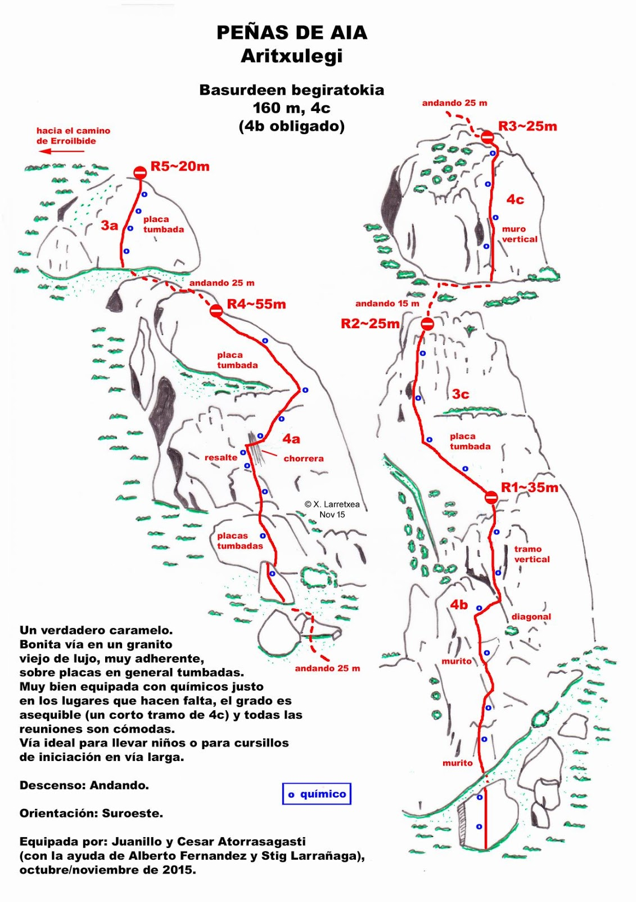
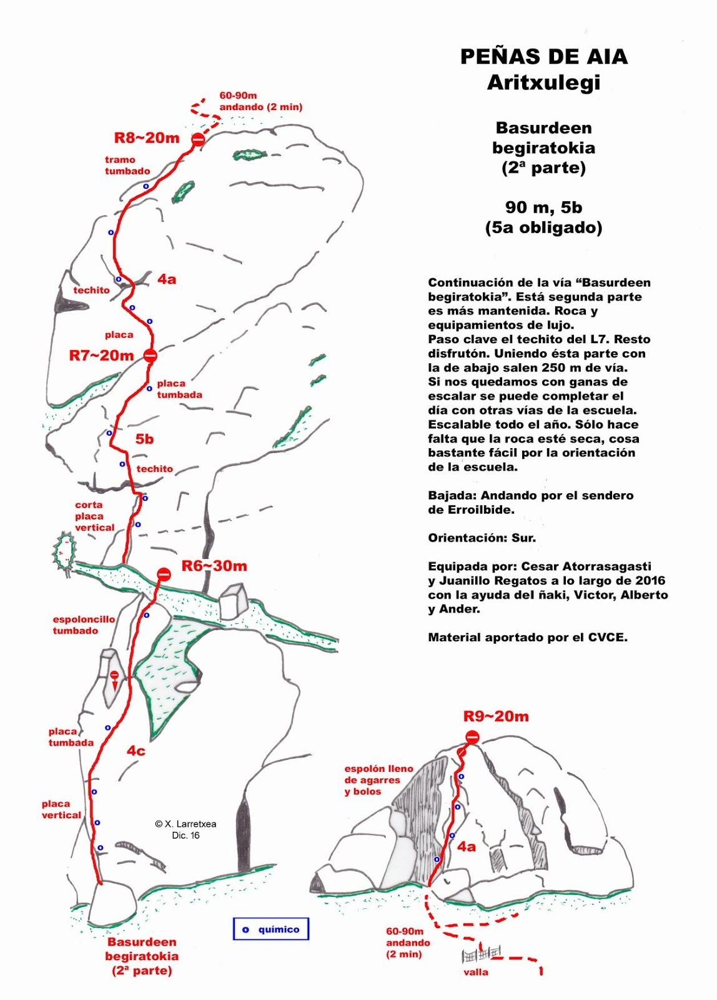

3ème couronne 3ème couronne
3ème couronne 3ème couronne2h40min de Bordeaux, 40min de Saint Jean de Luz
Altitude : 420m
Trace avec poursuite vers 3ème couronne
Approche
Très facile à trouver depuis la route qui monte au col d'Aritxulegi.À proximité du km8, on voit très bien la sente qui monte au départ.
Voie
L1 4c 35 m
L2 3c 25 m Possibilité de doubler L1 et L2
L3 Un peu de marche
L4 4c 25 m Quelques pas au départ.
L5 Un peu de marche
L6 4c 55 m Beaucoup de II, de tirage, et un peu de végétation.
L7 Un peu de marche
L8 3c 25 m
Du somment, continuer la sente jusqu'à rejoindre un chemin.Si vous tournez à droite, vous pouvez rejoindre facilement le tunnel en restant sur le sentier.Ou alors continuer de grimper sur les autres voies que vous rencontrez...
Granite
Matériel
Corde 60 m conseillée
Longues dégaines

>